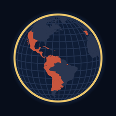

CRONOGLOBOÚltima actualización: 22 de noviembre de 2026 · English version below
«Cronoglobo» es una herramienta privada de escritorio que utiliza únicamente el creador del canal de YouTube Cronoglobo para publicar sus propios vídeos y consultar las estadísticas de su propio canal. No está disponible para otras personas y tiene un solo usuario.
Esta herramienta usa los Servicios de API de YouTube. Al usarla, aceptas las Condiciones del servicio de YouTube. Los datos que se obtienen a través de los Servicios de API de YouTube también están sujetos a la Política de privacidad de Google.
Para cualquier consulta sobre esta política, escribe a través de la sección «Más información» del canal de YouTube Cronoglobo.
"Cronoglobo" is a private, single-user desktop tool used only by the owner of the YouTube channel Cronoglobo to upload their own videos and read their own channel's statistics through the YouTube Data API and the YouTube Analytics API. It also reads public view counts of public videos from other channels with an API key. It does not collect personal data from viewers or other users, does not sell or share any data, does not use data for advertising, and never publishes anything without the channel owner's manual approval.
This tool uses YouTube API Services. By using it, you agree to be bound by the YouTube Terms of Service. Data obtained through YouTube API Services is also subject to the Google Privacy Policy.
Storage and deletion. OAuth credentials and reports are stored only on the channel owner's computer; there are no external servers or databases. Reports containing data obtained from the API are automatically deleted after 30 days or replaced with refreshed data before then. You can revoke the tool's access at any time via the Google security settings page; once revoked, the stored credential stops working and is deleted from the computer, together with any associated reports, within 7 days. This website uses no cookies and collects no visitor data.